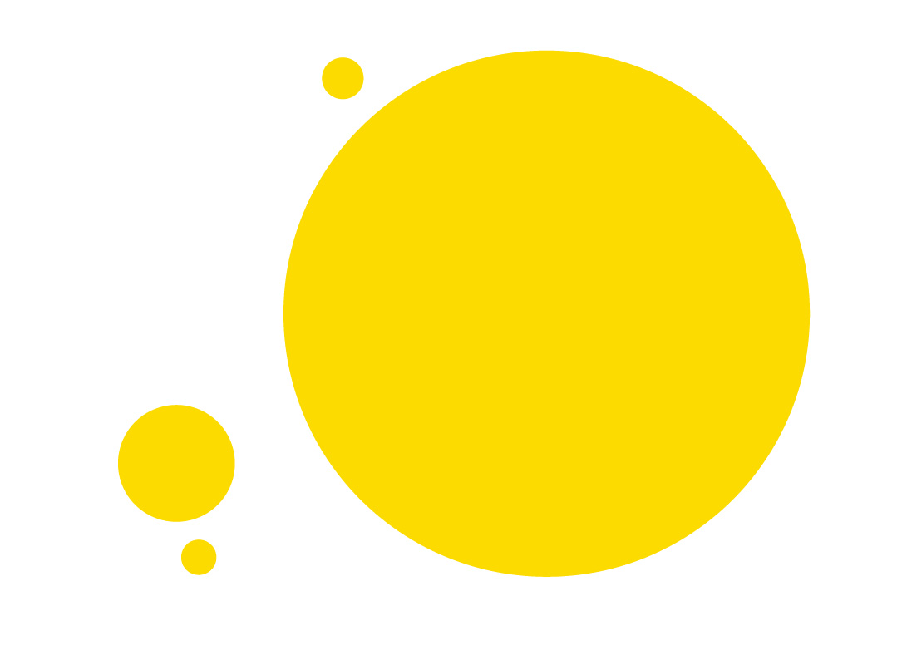
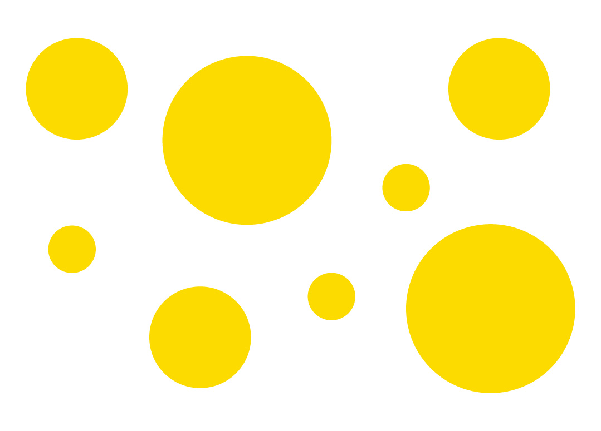
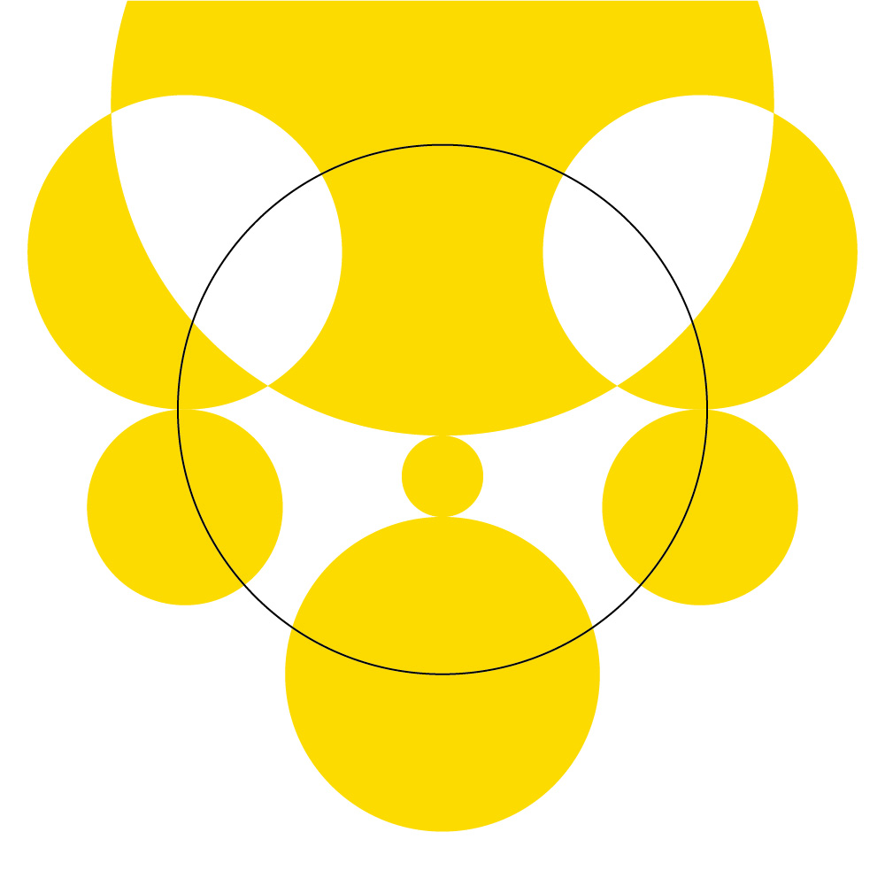
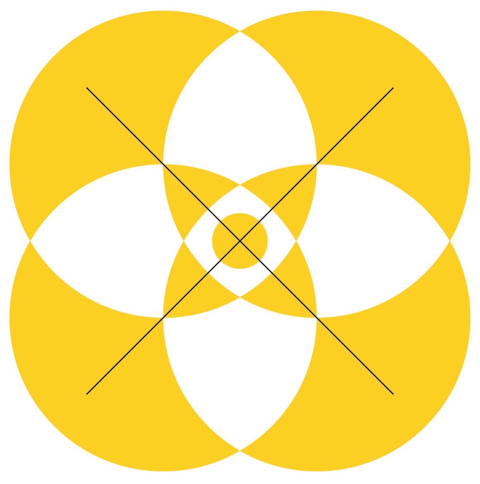
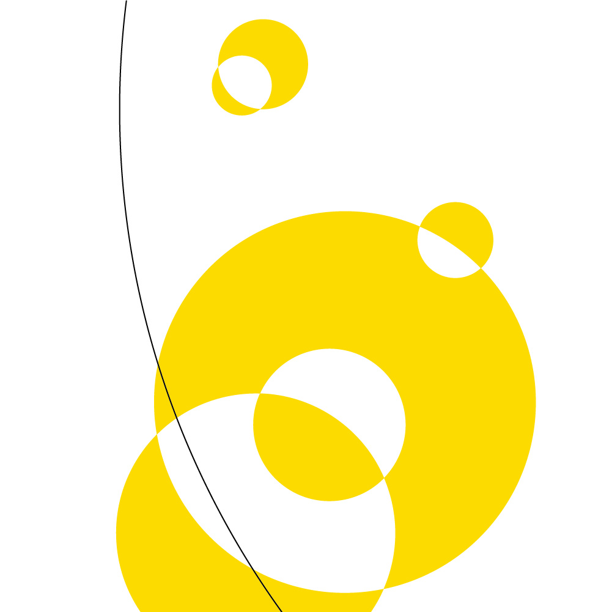
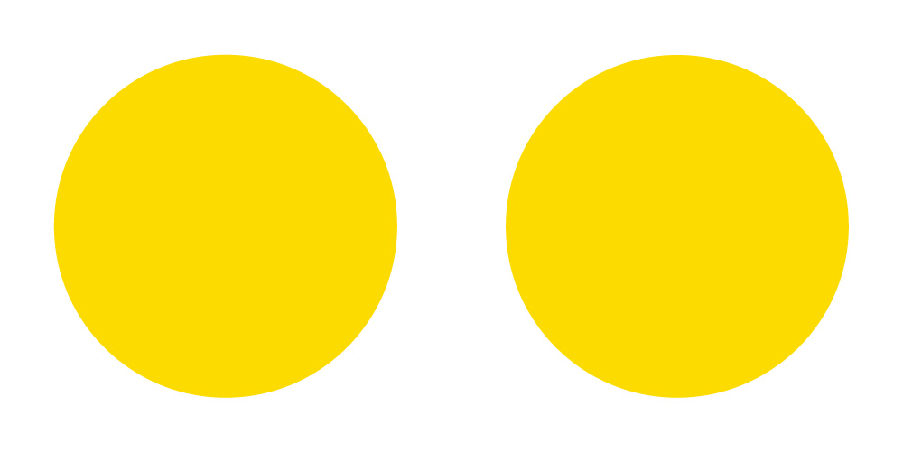
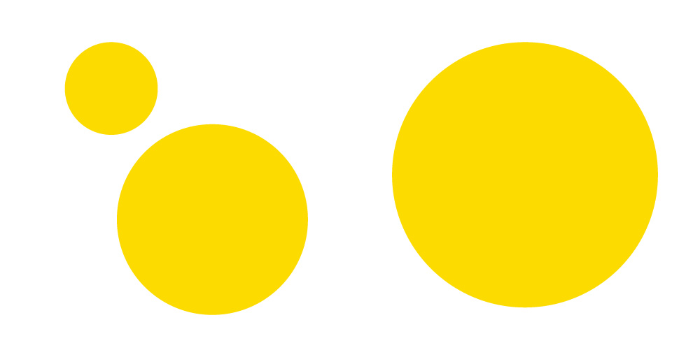
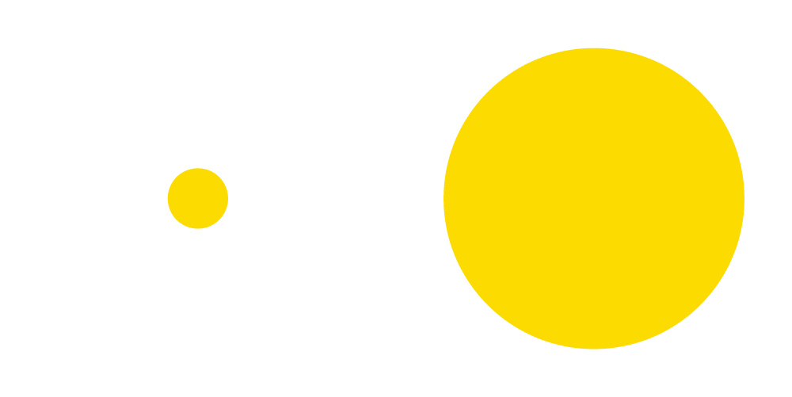

Композиция
Композиция — фундаментальная дисциплина графического дизайна, изучающая методы организации визуальных элементов на плоскости. Её цель — создание гармоничной структуры, обеспечивающей эффективную передачу информации и эстетическое воздействие. Композиция оперирует такими категориями, как целостность, уравновешенность и соразмерность, формируя единое смысловое и визуальное пространство произведения.
Иерархия и доминанта
Визуальная иерархия определяет последовательность восприятия информации зрителем. Доминанта (или композиционный центр) — элемент, привлекающий первоочередное внимание благодаря контрасту размера, цвета, формы или изоляции от остальных объектов. Подчиненные элементы организуются вокруг доминанты, создавая логическую структуру повествования. Отсутствие четкой иерархии приводит к визуальному шуму и затрудняет считывание сообщения.

Доминанта, выделенная размером

Отсутствие доминанты
Правило третей
Правило третей — классический метод пропорционирования, основанный на делении формата двумя горизонтальными и двумя вертикальными линиями на девять равных частей. Точки пересечения этих осей являются оптически сильными позициями для размещения ключевых элементов. Размещение объектов на этих узлах или вдоль линий сетки создает более естественное и сбалансированное восприятие, чем центральное расположение, часто выглядящее статичным.
Наведите курсор на изображение, чтобы увидеть сетку третей
Симметрия
Симметрия в композиции достигается зеркальным или радиальным равенством элементов относительно центральной оси или точки. Она придает дизайну устойчивость, официальность и монументальность. Асимметричная композиция, напротив, строится на визуальном равновесии разнородных элементов. Асимметрия сложнее в исполнении, но позволяет достичь большей динамики и современности звучания.

Осевая симметрия

Центральная симметрия

Асимметрия
Баланс
Баланс (равновесие) — состояние композиции, при котором визуальные веса элементов распределены равномерно относительно центра или оси. Визуальный вес зависит от размера, тональности, насыщенности цвета и сложности текстуры. Формальный баланс достигается симметрией, неформальный — компенсацией различных по характеристикам объектов. Нарушение баланса вызывает ощущение нестабильности и дискомфорта у зрителя.

Формальный баланс

Неформальный баланс

Нарушение баланса (дисбаланс)